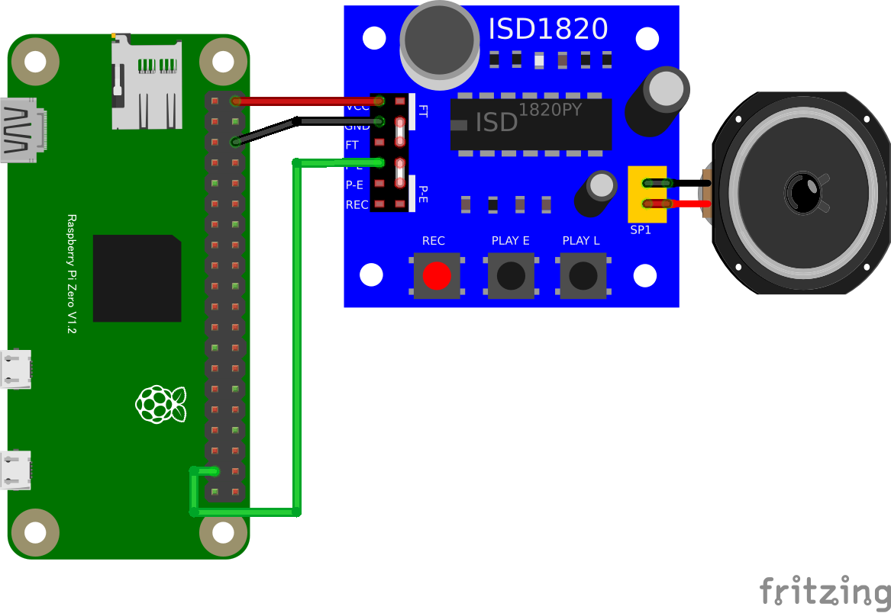

import {requestGPIOAccess} from "./node_modules/node-web-gpio/dist/index.js";
const sleep = msec => new Promise(resolve => setTimeout(resolve, msec));
async function blink() {
const gpioAccess = await requestGPIOAccess();
const port = gpioAccess.ports.get(26);
await port.export("out");
for (;;) {
await port.write(1);
await sleep(3000); // 3秒間再生
await port.write(0);
await sleep(1000); // 1秒間停止
}
}
blink();